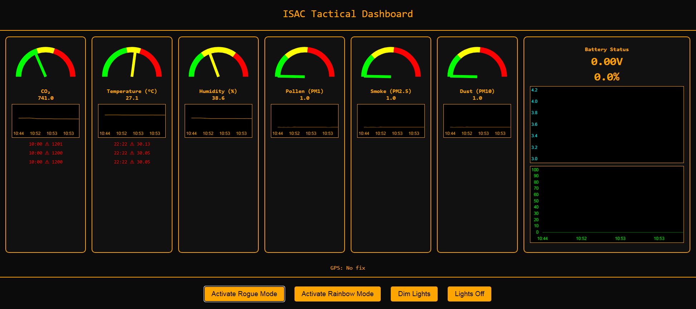

ISAC Environmental Warn Sensor -- Real-Life Concept Inspired by The Division
Hey everyone! I’ve been building a real-world version of the ISAC Environmental Warn Sensor, inspired by the iconic SHD tech from Tom Clancy’s The Division.
This solo project brings the in-game concept to life using real sensors and long-range wireless communication via LoRa. That means the device can send environmental hazard data -- like toxic gas levels, extreme temperatures, or poor air quality -- over several kilometers, all without needing Wi-Fi or cellular service.
Perfect for remote or emergency scenarios where infrastructure is down.
Long-Range Communication
Utilizes LoRa (Low Power, Long Range) for communication over several kilometers without Wi-Fi or cellular.
Real-Time Alerts
Provides immediate alerts from isolated or off-grid locations for environmental hazards.
Comprehensive Monitoring
Monitors air quality, gas levels, temperature, humidity, UV, and particulate matter.

Example of the ISAC sensor interface and data display.
SHD Tech Inspired
A real-life rendition of the iconic SHD tech from Tom Clancy’s The Division.
ISAC Environmental Sensor Beacon -- Project Summary
🔧 Hardware Overview
- Core MCU: Adafruit Feather HUZZAH32 (ESP32), CircuitPython and Arduino compatible
- Stacked FeatherWings:
- Adafruit Ultimate GPS FeatherWing (with RTC)
- Adafruit microSD FeatherWing (data logging)
- Sensors (via TCA9548A multiplexer):
- SCD41 -- CO₂, Temperature, Humidity (I2C, daisy-chained on channel 5)
- PMSA003I -- Particulate Matter (PM1.0, 2.5, 10) (I2C, on channel 5)
- AS7341 -- UV/Light Sensor (I2C, channel 4)
- LSM6DSOX -- Accelerometer + Gyroscope (I2C, channel 7)
- Output / Feedback:
- NeoPixel RGBW LED ring (not yet connected due to soldering constraints)
- STEMMA speaker module (planned, using plug-and-play JST connections)
- Power:
- Runs on a 3.7V 2200mAh LiPo battery
- Charging handled by onboard Feather circuitry
- Future: Add a compact power switch between LiPo and Feather (plug-and-play type)
🌐 Features & Goals
- 🔬 Sensor Readout: Real-time monitoring of air quality, CO₂ levels, temperature, humidity, UV exposure, and motion.
- 📡 BLE Communication: Data streamed to a mobile app via BLE (Bluetooth Low Energy).
- 📍 GPS Location Sync: Built-in GPS FeatherWing for live positioning.
- 🛰 LoRa Expansion: Planned LoRa mesh support to allow ISAC units to communicate and relay messages when offline.
- 💾 Data Logging: SD card storage for environmental and GPS data.
- 🌈 LED Visuals: NeoPixel ring for visual alerts (e.g. air quality color, UV exposure intensity).
- 🔊 Audio Feedback: WAV/MP3 playback triggered by sensor events (e.g. voice alerts for poor air).
🛠 Development Notes
- Majority of sensors connected via STEMMA QT or JST plug-and-play, minimizing soldering.
- TCA9548A used to route multiple I2C sensors with overlapping addresses.
- Software is actively being developed in both CircuitPython and Arduino C++, with current success in Arduino for complete sensor integration.
- All sensor data is formatted in human-readable output with status markers: e.g., (Good), (Moderate), (Unhealthy).
📦 Physical Specs
- Enclosure target dimensions: 45mm (W) x 130mm (L) x 32mm (D)
- Designed to fit comfortably on the user's shoulder with external antennas (LoRa, GPS)
🔄 Current Status
- ✅ All sensors fully wired and integrated
- ✅ Working Arduino firmware for CO₂, PM, UV, motion, and IMU
- ✅ GPS FeatherWing recognized and tested (via UART2 remapping)
- 🧪 NeoPixel integration pending due to solder access
- 🛠 BLE and LoRa functionality planned for Phase 2
- 🎯 Project approaching hardware-final state, focus now on mobile app + software integration
🔧 Sensors & What They Detect
| Sensor/Module Name |
What It Detects |
| BME680 | Temperature, Humidity, Air Pressure, VOCs (air quality) |
| MQ-135 | CO₂, Ammonia (NH₃), Benzene, Smoke, VOCs |
| MQ-2 | LPG, Smoke, Methane, Hydrogen |
| MQ-7 | Carbon Monoxide (CO) |
| CCS811 / SGP30 | eCO₂, Total VOCs (TVOCs) |
| DS18B20 | Precise Temperature |
| BH1750 | Light Intensity (lux) |
| Microphone / Sound Sensor | Ambient Noise Level |
| PIR Motion Sensor | Motion / Presence |
| NEO-6M GPS | Location (not a sensor, but adds geo-data) |
| LoRa Module (e.g., SX1278) | Wireless Data Transmission (not a sensor, for communication) |
Development Timeline - Visual Journey
Explore the evolution of Project ISAC through various stages of its development. Each image marks a significant step, accompanied by details on the progress made and challenges overcome.
Finalised Device
A comprehensive view of the fully assembled ISAC Environmental Sensor Beacon. This marks the culmination of the hardware development phase, with all components integrated and the device ready for extensive software and mobile app integration. Its compact and field-ready design is clearly visible.
This section showcases various angles and operational demonstrations of the device, highlighting its compact design and the subtle lighting effects from the NeoPixel ring (as seen in the 'Rainbow' video).
Sensor Output + Interface
After getting everything fitted, I wanted to focus my efforts on the interface. My original idea was that it would sync with a mobile phone app that would then be able to give you push notifications. However, with the deadline looming, I wasn't able to achieve this goal as of yet. I'm still trying to get that working and I'm not the best at programming Android apps, so I may have to find someone else who can help. If you can help with that, please reach out to me because I would love to get assistance with that. Anyway, you can see here: the first image will be the first time I actually got reading data out of the device, and I was ecstatic! Then you'll see a couple of images of the interface and how it evolved through time.
Iterations, Iterations, Iterations
After many more iterations, I finally found the layout that I wanted for my device, and I put all the components in and test fitted everything. It was at this point I realised that I would not be able to control the ring lights via the method that I wanted to, which was without soldering. So the images in this section that are lit up are actually lit up by my phone's light with some Capton tape over it to give that orange glow. I wanted to see how it would look when it was lit up with all the objects and sensors within it.
Module Fit Testing
After messing around with the components inside the main body, I realised that if I wanted to improve battery life, I would need to make more room. The only way I could think of doing that, and keeping everything within your universe and canon to the game, was to look to the games for inspiration. I looked through the different variations of ISACs and found the Banshee ISAC, which is actually the one I use in-game. It has an extra module on the top, which was perfect because this extra module could be used to perfectly fit two sensors, removing them from the main body and moving them into the top of the device, giving a lot more room for battery within the device itself. This was the particulate sensor and the CO2 temperature combo sensor. This involved painstakingly recreating the module so that it could be attached to the main device, and then working on the 3D model itself within the slicer software to cut out the section for that device.
Prototype Evolution
Here is a pseudo-history of the evolution of the device. As you can see, I used several different filament colours as none of these were supposed to be the final devices. These were all just me test fitting different components and making sure that everything fit and looked how I wanted it to, and that I could actually print it. The problem with me and 3D modelling is I always do stuff the hard way. So the majority of the way I built this device wasn't actually modelling. I modelled the original shell and then I used negative parts to cut out everything I needed, as seen in the images in this post. A lot of this construction was trial and error, getting a calliper, measuring the parts, and making a rough negative version of it and then putting it inside the device, printing that out and then fitting it IRL. Once that part was complete, it either got added to the body, therefore welded together and printed as one piece, or it was printed in 2 pieces and glued together.
Prototypes of The Different Versions Of Isac & Slicer Screenshots
After many prototypes of getting size and depth and colour correct, this is my first printed prototype that has the colour I want and the layout almost perfect. Or at least I thought at this point in time! I was still trying to make this the default ISAC. If you have played the Division games before, there are several different ISACs that have different abilities. The final one I ended up going with is the Banshee ISAC, which has a module on the top and a more pronounced button, which you will see in the final design.
The origins of the idea.
The origins of this idea were, when I was playing the vision with my now maid of honour and best friend I constantly joked that I could make a better Isaac. And then when I started thinking about it more in depth, I realised that it wouldn't actually be that difficult. And so began this process of trying to find any sort of reference in the game to blueprints, to layout, getting as much information together as I could to figure out what a functional Isaac would be. This involved hours of research hundreds of hours in gameplay, using the device, learning its law, its history, listening to all the audio logs in game about its development The device that is not the game itself and working through that process figuring out exactly what I wanted Isaac to be able to do irl